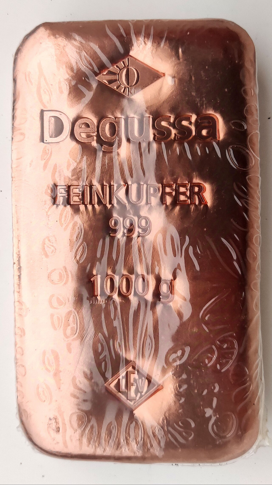
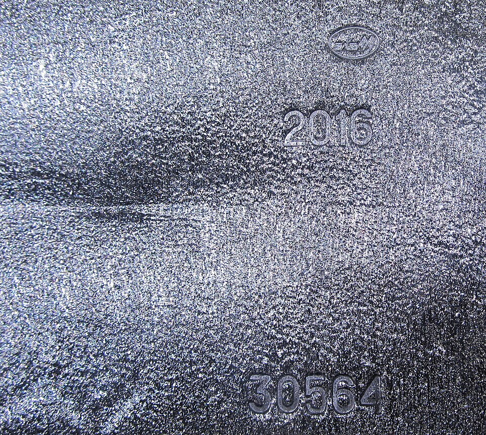
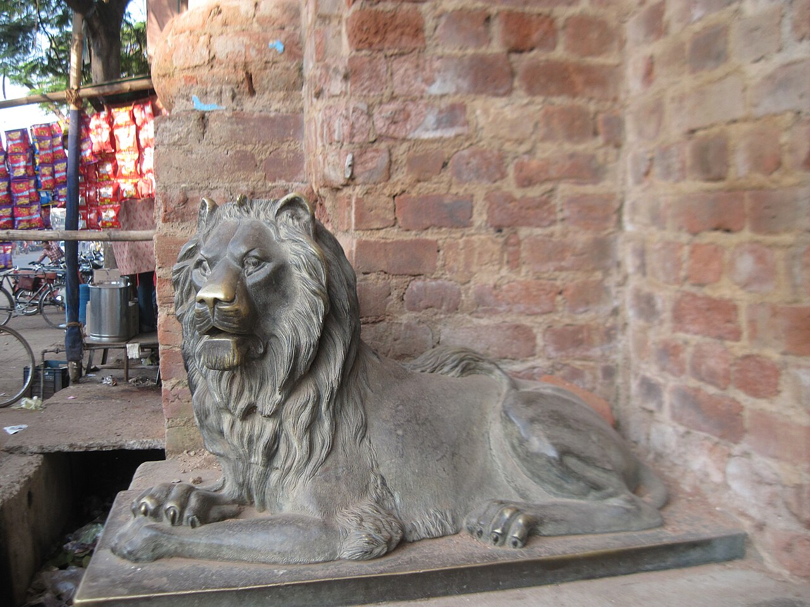
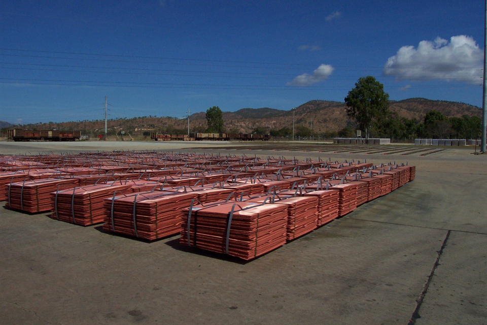
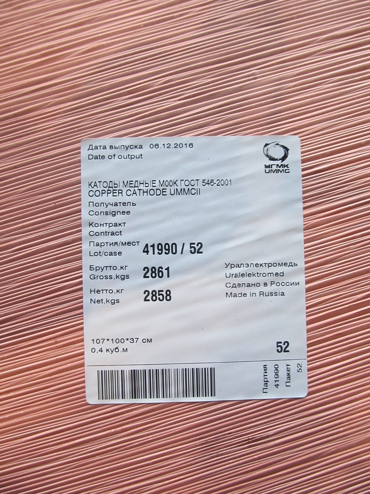
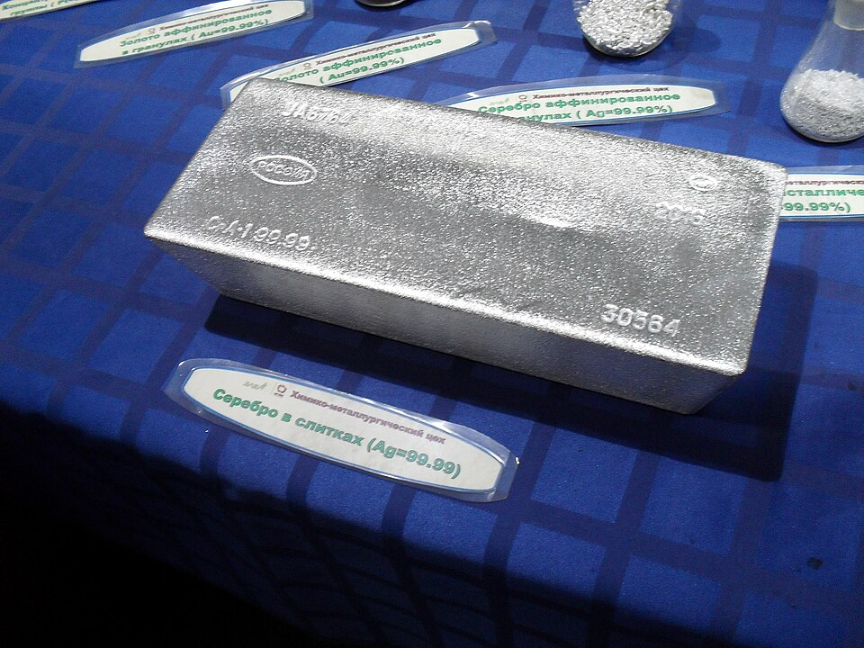
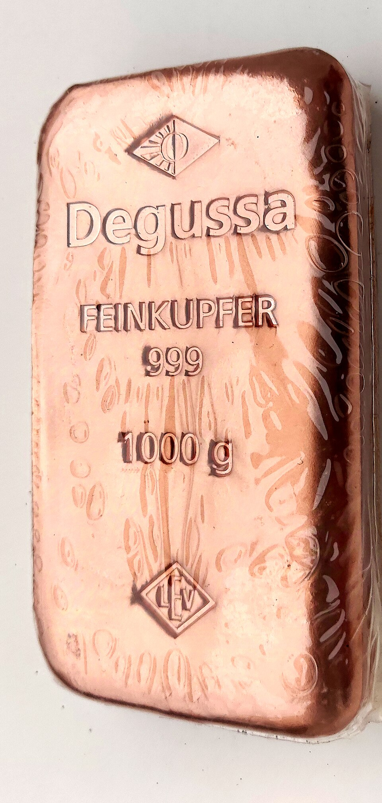

Chargen-Erlass
Der Löwentorso · 1 kg
Gevierte Prägung mit Löwenwappen, römischer Nummer und Plombe der Siegelwarte.
FeinheitCu 99,99 %
ÄraMMXXVI·I

LIONHEART schmiedet Kupferbarren von 99,99 % Reinheit und Feinsilber 999 — geprägt wie königliche Erlasse, gelagert wie Kronjuwelen. Jede Charge trägt ihr Wappen, ihre Nummer, ihren Eid.



Im Löwenhof entsteht kein Warenumschlag, sondern Zeremonie: Jeder Barren wird kathodisch gewonnen, im Vakuum gegossen und mit dem Wappen des Hauses versehen — Löwe, Krone und Bajoche, eingeschlagen wie ein königliches Siegel.
Unsere Schmelzer sind Hubherren, unsere Prüfer Siegelwarte. Wer einen Lionheart-Barren erwirbt, tritt ein in ein Register, das jede Charge dem Eid der Reinheit unterstellt: 99,99 % Kupfer, 999,0 Silber — dokumentiert, plombiert, unantastbar.
„Ein Barren ohne Wappen ist nur Metall. Ein Barren mit Wappen ist ein Versprechen.“ — Gründungsdekret, Artikel I

Drei Fenster der Sammlung — Kupfer, Silber und das Bündel der Kathoden, beleuchtet wie Reliquien.
Feinkupfer 99,99 % · Prägung I

Feinsilber 999,0 · Uralektromed
Kathoden Cu-ETP · Gelagert
Nur LME-registrierte Kathoden Cu-ETP treten in den Hof — geprüft auf Würde und Reinheit.
Elektrolytische Raffination auf 99,99 % — der Eid, den jedes Atom schwört.
Vakuum-Guss, Tiefstich-Prägung: Löwe, Krone, Bajoche und römische Chargennummer.
Siegelwarte plombieren jeden Barren; das Hofregister verleiht ihm Namen und Rang.
Beständig wie das Metall · Scroll hält an
Neben dem Löwen ruht das Feinsilber: Granulate, Kristalle und Barren von 999,0 Feinheit. Es ist der stille Bruder im Hof — lautlos in seinem Glanz, unbestechlich in seiner Reinheit.
Jede Tafel wird unter Plombe verliehen und im Hofregister vermerkt. Wer Silber des Hauses führt, führt einen Namen — nicht nur ein Gewicht.
Drei Erbstücke der aktuellen Ära — jede mit Wappen, Plombe und Register-Eintrag.
Gevierte Prägung mit Löwenwappen, römischer Nummer und Plombe der Siegelwarte.
Hofverliehenes Feinsilber mit Gravur des Hauses — der stille Bruder in edelster Form.
Industrieller Kathoden-Block für Gießereien — Reinheit unter Eid, Lieferung aus der Kammer.
Die Prägung unseres Lionheart-Barrens hängt seit der Verleihung im Empfang unserer Gießerei — als Zeichen, dass Reinheit Tradition ist.
Dokumentierte Reinheit, plombiert, registergeführt — so etwas findet man nicht am Kupfermarkt, sondern nur am Hof.
Wir bestellen Kathoden nach Erlasse — pünktlich wie ein Kronrat, verpackt wie ein Geschenk des Hauses.

Fordere das Hofregister an: aktuelle Chargen, Feinheits-Nachweise und Verleih-Bedingungen — persönlich, diskret, unmittelbar.